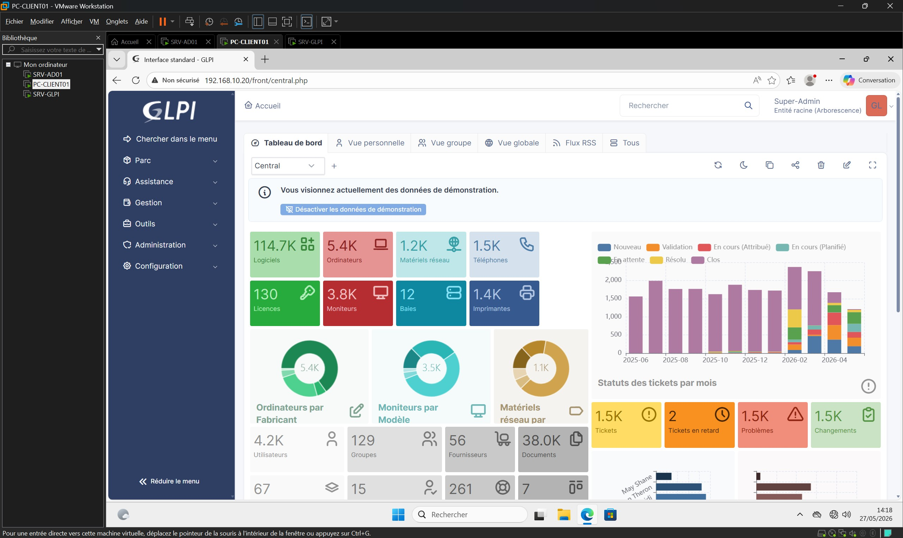
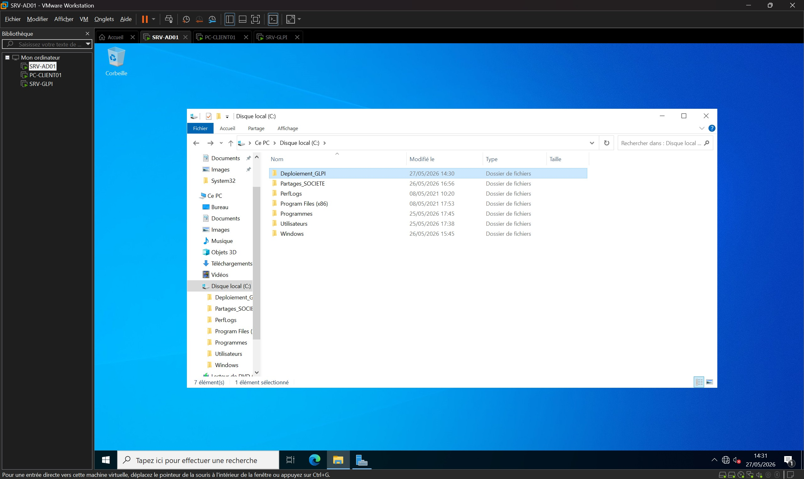

Automatisation de l'inventaire du parc informatique (GLPI / GPO)
Présentation
Dans le cadre de mon alternance au sein du service informatique de l’EBI, j’ai participé à la réflexion autour du remplacement de FusionInventory par GLPI Inventory.
FusionInventory était encore utilisé pour la remontée d’inventaire du parc informatique, mais cette solution n’est plus maintenue. L’objectif était donc d’étudier une solution plus récente, directement intégrée à GLPI, afin de garantir la continuité de l’inventaire matériel.
Cette réalisation a d’abord été menée en environnement de test afin d’éviter tout impact sur le serveur GLPI de production.
Objectifs
Étudier le remplacement de FusionInventory par GLPI Inventory.
Tester la solution sur une machine de préparation avant toute intervention en production.
Vérifier le bon fonctionnement de la remontée d’inventaire.
Comprendre le fonctionnement de l’agent GLPI et de sa communication avec le serveur.
Préparer une procédure exploitable pour une future mise en production.
Environnement technique
Solution cible : GLPI Inventory
Solution remplacée : FusionInventory
Application concernée : GLPI
Environnement : serveur GLPI de test
Machine de test : poste Windows
Composant installé : GLPI Agent
Préparation de la maquette
Avant de manipuler l’environnement de production, j’ai travaillé sur une maquette afin de tester le fonctionnement de GLPI Inventory dans des conditions maîtrisées.
Cette étape permettait de vérifier que le serveur GLPI était correctement configuré pour recevoir les inventaires et que l’agent installé sur un poste client pouvait transmettre les informations attendues.
Activation de l’inventaire natif
J’ai activé la fonctionnalité d’inventaire natif dans GLPI afin de permettre au serveur de recevoir les remontées provenant du GLPI Agent.
Cette configuration constitue une étape indispensable avant l’installation de l’agent sur les postes clients, car elle prépare GLPI à centraliser les informations matérielles et logicielles.

Installation du GLPI Agent
J’ai ensuite installé le GLPI Agent sur une machine Windows de test.
Lors de l’installation, j’ai renseigné l’adresse du serveur GLPI afin que l’agent puisse communiquer avec celui-ci et transmettre automatiquement les données d’inventaire.
Vérification de la remontée d’inventaire
Après l’installation, j’ai contrôlé dans GLPI que le poste de test remontait correctement dans l’inventaire.
Cette vérification a permis de confirmer que la communication entre l’agent et le serveur fonctionnait correctement et que les informations du poste étaient bien collectées.

Contrôle des informations collectées
J’ai consulté la fiche du poste remonté dans GLPI afin de vérifier les informations collectées : matériel, système d’exploitation, composants et données d’inventaire.
Ce contrôle permettait de s’assurer que la solution répondait bien au besoin de suivi du parc informatique.
Résultats obtenus
GLPI Inventory a été activé sur l’environnement de test.
Le GLPI Agent a été installé et configuré sur un poste Windows.
La remontée d’inventaire vers GLPI a été validée.
Les informations matérielles et logicielles du poste ont été consultables dans GLPI.
La solution a été identifiée comme une alternative pertinente à FusionInventory.
Compétences mobilisées
Gérer le patrimoine informatique
Étude d’une solution d’inventaire permettant de maintenir une vision à jour du parc informatique.
Répondre aux incidents et aux demandes d’assistance et d’évolution
Préparation d’une évolution technique visant à remplacer une solution obsolète par un outil maintenu.
Travailler en mode projet
Réalisation de tests dans un environnement maîtrisé avant une éventuelle mise en production.
Mettre à disposition des utilisateurs un service informatique
Contribution à la fiabilité de l’inventaire, utile au support et à la gestion du parc.
Bilan personnel
Cette réalisation m’a permis de mieux comprendre le fonctionnement d’un outil d’inventaire informatique et l’intérêt de tester une évolution technique avant son déploiement en production.
J’ai également pris conscience de l’importance de maintenir les outils du système d’information à jour, notamment lorsqu’une solution n’est plus maintenue.
Ce projet m’a permis de progresser sur GLPI, sur la configuration d’un agent d’inventaire et sur la validation technique d’une solution avant son intégration dans un environnement professionnel.